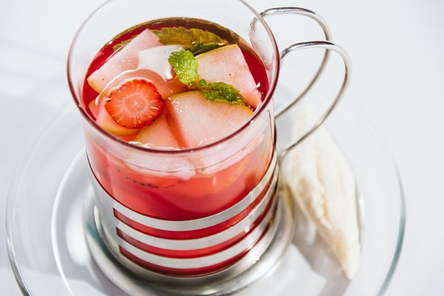

Aromatica con frutas
Ingredientes:
- 1 taza de agua
- 1 bolsita de aromática o hierbas (manzanilla, hierbabuena o frutos rojos)
- Frutas al gusto (ej: fresa, manzana, piña o naranja)
- Miel o azúcar (opcional)
procedimiento de preparacion
-
pon el agua en una olleta y deja que hierva.
-
Retira del fuego y añade la bolsita o las hierbas.
-
Agrega las frutas cortadas en trozos pequeños.
-
Tapa y deja reposar de 5 a 10 minutos para que suelte el sabor.
-
Endulza al gusto y sirve caliente.
-
Disfrute su aromatica
